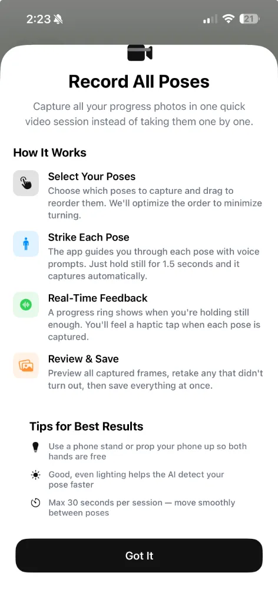
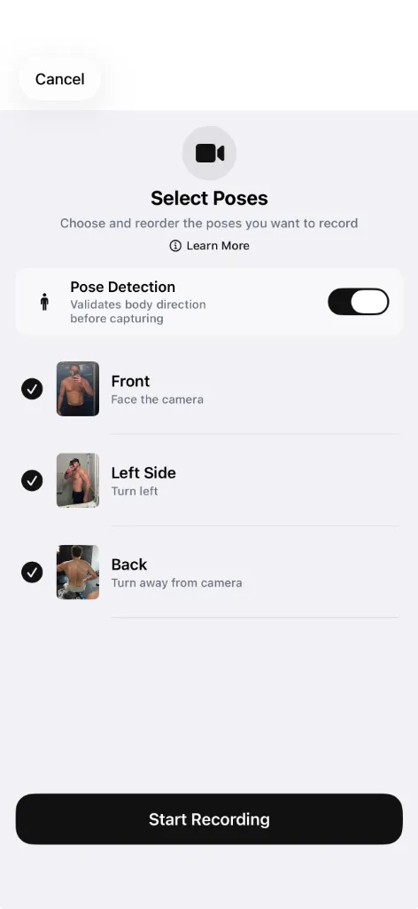

How to Take Progress Photos in 60 Seconds (Hands-Free)
Your daily check-in shouldn't take 10 minutes. Guided Recording automates the whole process so you can focus on posing, not fumbling with timers.
You set a 10-second timer. Sprint across the room. Try to hit the right pose before the shutter fires. Check the photo — you're off-center. Repeat three more times for three more poses. By the time you're done, 10 minutes have passed and you've already skipped leg day once this week because "check-in took too long."
This is why most people stop taking progress photos within two weeks. The process is tedious enough that it only takes one busy morning to break the habit. And once you skip a day, you skip a week. Then you've lost a month of visual data you can never get back.
The solution is removing every point of friction from the capture process. That's what Guided Recording does.
Why progress photo consistency matters more than quality
A progress photo taken with perfect studio lighting once a month is less useful than a decent photo taken in the same spot every morning. The value isn't in any single image — it's in the trend across dozens of images over time.
When you track consistently, small changes that are invisible day-to-day become dramatic over 8 weeks. You can see your waist tightening, your shoulders widening, your arms filling out. Miss a few weeks and you lose the gradient. You're left comparing January to April with nothing in between.
The key to consistency is making the process so fast that skipping it feels harder than doing it.
How Guided Recording works

Guided Recording replaces the entire timer-sprint-check cycle with a single, seamless flow. Here's what happens:
- Select your poses. Choose which poses you want to capture — Front, Left Side, Back, Right Side, or any combination. Drag to reorder them, and GainFrame optimizes the sequence to minimize turning.
- Set your phone down. Prop it on a stand, lean it against a water bottle, or use any stable surface. Both hands free.
- Strike each pose. The app guides you through each pose with voice prompts. Hold still for 1.5 seconds and it captures automatically. You feel a haptic tap when each shot is taken.
- Review and save. Preview all captured frames at the end. If one didn't turn out, retake just that pose without redoing everything else.
Three to five poses in under 60 seconds. No timer. No sprinting. No checking your phone between every shot.
Pose detection keeps you in frame

The most common reason progress photos are useless is bad framing. You're too far left. Your head is cropped. Your feet are cut off. You don't notice until after the session is over.
Guided Recording includes real-time pose detection that validates your body direction before each capture. A progress ring shows when you're holding still enough. If you're not positioned correctly, it waits until you are — no wasted frames.
This means every photo in your timeline is consistently framed, consistently angled, and consistently usable for AI analysis.
Every photo is scored as it's processed
After each guided session, your photos are automatically imported and scored. You don't have to wait hours for results. By the time you've put your shirt back on, you can see your GainFrame Score for every pose.
If you're using Score Insights, you'll also see exactly what influenced each reading — whether photo factors like lighting affected the score, or whether the changes reflect real physique progress.
Quick checklist: setting up your daily check-in spot
For the best results with Guided Recording, standardize your setup once and never think about it again:
- Same corner of your gym or bathroom every morning
- Phone propped at chest height, 4–5 feet away
- Natural light from a window to one side (avoid direct overhead lights)
- Same minimal clothing each session
- Fasted, before your first meal — hydration and food bloating affect visual results
- Enable pose detection so the AI waits until you're correctly positioned
Once this is dialed in, your daily check-in becomes a 60-second habit that runs on autopilot. Want to make sure your setup is fully optimized? Run through our free progress photo setup tool — it scores your current routine and flags anything you're missing.
Stop skipping check-ins. Make them automatic.
The hardest part of tracking your physique is doing it consistently. Guided Recording removes every excuse by cutting the process down to under a minute.
Here's the framework:
- Set up your spot using the checklist above. Do this once.
- Open Guided Recording every morning as part of your routine.
- Strike your poses. The app handles the rest — capture, import, scoring.
- Check your trend weekly. Don't react to any single day's score. Look at the arc over 4–8 weeks.
You don't need better photos. You need more photos, taken the same way, every time. Guided Recording makes that effortless.